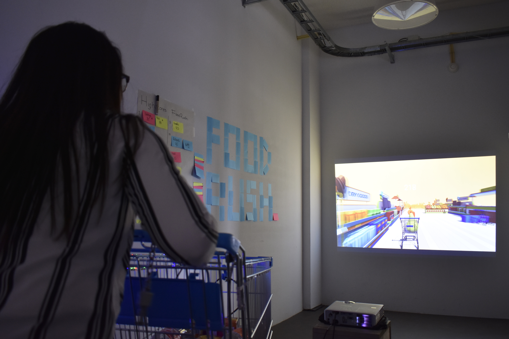
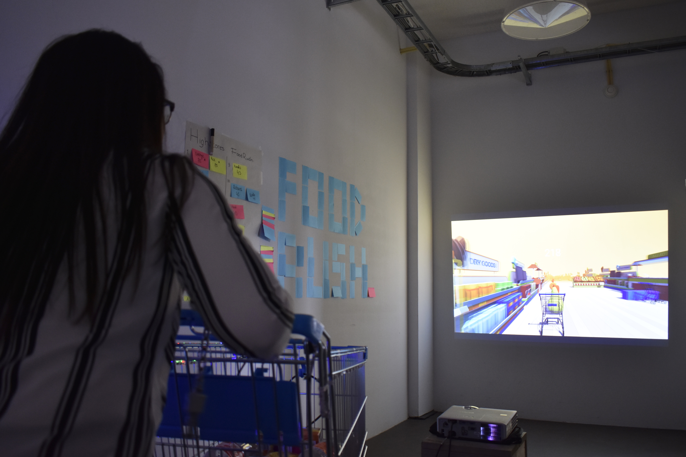
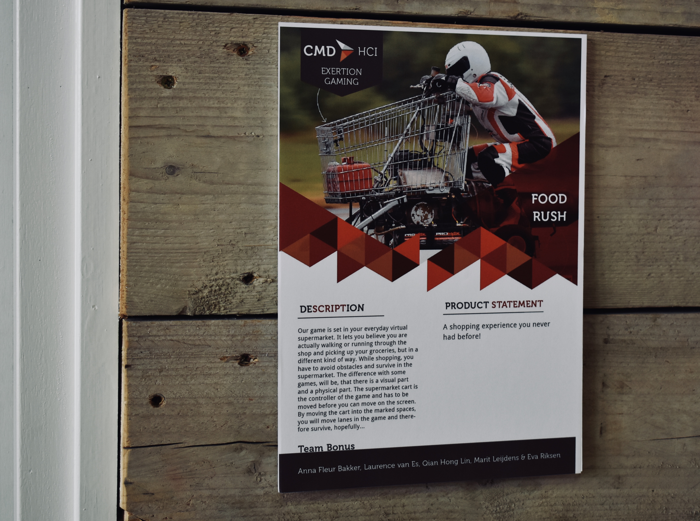
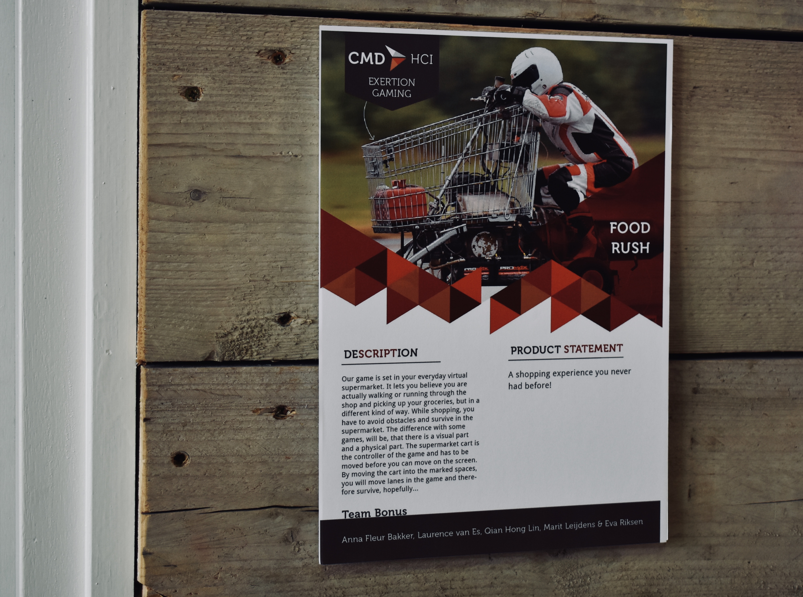

Lab weeks
Proces
Dag 1 - 4 juni 2018
Eerste dag hebben we concepten bedacht en ideeën gebrainstormd. Van de ideeën hebben we een top 5 gemaakt:
- Interactive playground, Een voorbeeld die wij hadden gevonden was een interactieve muur die gebruiker wordt als doel voor handbal of voetbal. Een ander voorbeeld is vies en lekkertje spelen met lichten die aangeven waar kinderen kunnen staan. We hadden verschillende voorbeelden bedacht die zowel binnen als buiten individueel of samen gedaan konden worden.
- Station game, gebaseerd op de mobiele game draw something waarbij je met een andere persoon tegenover het perron het spel speelt. Er wordt hier gebruik gemaakt van een smartboard om op te tekenen
- Supermarkt route, de winkelwagen laat door middel van strips de kortste rout zien aan de gebruiker. Tim vond dit een goed idee.
- Disco stairs, met sensoren worden de voetstappen gedetecteerd en gaan de trappen licht geven. Als er meerdere mensen de trap nemen dan zullen er meerdere lichten aangaan en een soort van disco effect veroorzaken.
- Muziek, met beweging wordt er geluid gecreëerd. Bijvoorbeeld met een controller dirigeren en op die manier de muziek maken.
We hebben de supermarkt route gekozen en besloten om dit de volgende dag uit te testen. Voor de supermarkt route idee hadden we in gedachte om LED strips aan de bovenzijkanten van de winkelwagen te plakken en deze geven licht om richting aan te geven. De gebruiker heeft in dit geval op zijn telefoon zijn boodschappen staat met een app en “scant” het lijstje zogezegd in de winkelwagen. De LEDs laten aan de gebruiker zien welke richting schappen ze in moeten rijden en dit zorgt ervoor dat de gebruiker de kortste route neemt door de winkel. De LEDs herkennen de locatie in de winkel door middel van markers. Dit zal geprogrammeerd worden met processing, Arduino en de processing library TUIO. De markers werken gecombineerd met TUIO. Vandaag is er al getest met TUIO en is er aan de praat gekregen om LED lampjes te laten reageren op de markers via de webcam.
Stappen verder zijn dat de winkelwagen de producten automatisch scant wanneer ze in de winkelwagen worden gedaan, De snelheid en tijd meten en dit in een score zetten voor competitie en de laatste stap is eventueel een karretje maken die van zichzelf rijdt. Voor nu focussen wij ons op de eerste stap, wat de laat zien waar de winkelwagen naar toe moet door middel van LEDs.
Voor deze eerste test hebben we een winkelwagen nodig en ik heb geregeld dat we de volgende dag een winkelwagen konden gebruiken. Verder heb ik meegedacht met de concepten, ideeën bedacht in de brainstorm en meegedaan aan research voor het concept.

Dag 2 - 5 juni 2018
Voor de tweede dag heb ik de winkelwagen gebracht naar Zoetermeer, ik heb schetsen gemaakt van het concept, plattegrond gemaakt voor het testen en de webcam kunnen verbinden aan reacTIVision.
De winkelwagen zal gebruikt worden om te testen en is de basis voor ons concept met de supermarkt. De ideeën heb ik geschetst en opgehangen aan het boord. De schets bevat alle functionaliteiten die we hadden opgenoemd, dus niet alles wordt uitgewerkt maar het is wel uitgetekend. Daarnaast heb ik ook kort geschetst hoe de camera werkt met de marker van TUIO. De plattegrond van het testen bevat kort uitgebeeld en beschreven wat we willen testen om te zien of het werkt. Voor het programmeren van de markers van TUIO gebruiken we een programma genaamd reacTIVision, wat door middel van een camera de markers herkent. Voor de winkelwagen hadden we het idee om gebruik te maken van een externe camera die de markers zal herkennen. We hebben voor elkaar gekregen dat het programma de camera gebruikt.
Problemen die we de volgende dag gaan oplossen zijn:
- De winkelwagen versieren
- bedenken hoe we de webcam los van Arduino kunnen laten werken
- Achterliggende game bedenken zodat er meer exertion wordt toegepast.
Dag 3 - 6 juni 2018
Voor vandaag hebben we verder geprobeerd om de problemen van gisteren en nieuwe problemen op te lossen.
- De winkelwagen versieren
- bedenken hoe we de webcam los van Arduino kunnen laten werken
- Achterliggende game bedenken zodat er meer exertion wordt toegepast.

Dag 4 - 7 juni 2018
Voor de vierde dag hebben we het volgende gedaan:
- met Arduino getest of de LEDs gaan blinken en dat ze gaan stoppen na een aantal keer blinken
- We hebben het concept weer aangepast en dit aangescherpt
- Voor het nieuwe concept hebben we Unity uitgetest
- Voor Unity heb ik met Blender een object gemaakt.
Met Arduino is er weer verder getest of we LEDs konden laten blinken en ze te laten stoppen op een bepaalde tijd. Vandaag was daarvoor een oplossing gevonden en zal daarmee verder gewerkt worden om het gewenste resultaat te krijgen. Het concept hebben we aangepast zodat het meer richting de exertion gaming gaat. We hebben nu in dit nieuwe concept besloten om samen met een beamer en Unity te gaan werken. We zijn van plan om met Unity een game te bouwen en dit samen te laten werken met de winkelwagen. De beamer projecteert de game op een wand en de winkelwagen zal gebruikt worden als een soort van controller die de winkelwagen in de game zelf bestuurt. Er zal dan op de paden gezond en niet gezond eten geplaatst worden, wat opgeraapt kan worden door de kar. Deze producten kunnen punten geven of of er kunnen punten worden afgetrokken. Wij zijn uiteindelijk van plan om het scherm in een soort van halve cirkel te plaatsen zodat de speler meer immersed is in de game. Daarnaast wordt er op de winkelwagen nog LEDs gebouwd met de reden zodat de game feedback kan geven aan de speler en om dat we nog onderdelen van ons vorige concept wilde hergebruiken.
We zijn ook begonnen met Unity en Blender. Met Unity willen wij de game bouwen en zijn we nu de basis aan het maken. De game wordt gemaakt als een oneindige hal met het thema van een supermarkt. In Blender willen we de producten maken en dit in Unity gebruiken. Ik ben vandaag begonnen te leren werken met Blender en heb een appel gemaakt. Daarnaast had ik ook nog gekeken naar de accelerometer en gyroscoop, hoe dit werkt en hoe dit mogelijk gebruikt kan worden.
Vandaag hadden we ook een gastcollege van Vincent Lindeboom van Next empire. Het was een inspirerende college en er kwamen veel voorbeelden langs van projecten die Next Empire hebben gedaan, zoals een project voor de Eftelingzoetrope of een project voor Sony met AR.

Dag 5 - 8 juni 2018
voor de laatste dag van week 1 is het gelukt om de LED strips aan TUIO te verbinden en om het te laten knipperen. Het knipperen werkt niet 100%, maar het gaat de goede richting op. Daarnaast is er ook al een prototype gemaakt voor het versieren van de winkelwagen met karton en ook al een kartonnen houder gemaakt voor de hardware. In Unity is er verder met de game gebouwd en is het gelukt om het spel oneindig te laten lopen. In Blender is het mij gelukt om meer producten te maken, zoals een andere kleur appel, een peer en een wortel. Daarnaast heb ik getest of dit ook in Unity geplaatst kon worden en of het ook daarin werkt.In Blender ben ik tegen een paar problemen aangekomen, maar deze problemen hebben vooral te maken met hardware. Om bepaalde functies te gebruiken heb ik een ander toetsenbord nodig vanwege bepaalde snelkoppelingen, zoals de nummers op de numpad die de macbook pro standaard niet heeft.
Vandaag was er ook weer een gastcollege gegeven door Peter van de Putten van de Universiteit Leiden. Er kwamen veel voorbeelden langs die te maken hadden met menselijke kwaliteiten. Er kwamen voorbeelden langs van emotional bots, creative bots, helpless bots, misbeharing bots, pooping bots en useless bots.
Click here for their website
Dag 6 - 11 juni 2018
We waren eerst begonnen met een scrum sessie, waarbij we keken wat we gister gedaan hadden, wat we vandaag moesten doen en wie wat ging doen. Er was vandaag weer verder gewerkt met de kar en de LEDs, is er verder gewerkt aan de game in Unity, in Blender figuurtjes gemaakt en gebrainstormd voor een naam.
Met TUIO was het gelukt om de LEDs te laten blinken tot een bepaalde tijd en het ook daadwerkelijk te laten stoppen. Dit hebben we vastgemaakt aan de prototype winkelwagen om te testen met Processing en de camera. Daarnaast is er een nieuwe winkelwagen gehaald van de lokale supermarkt en wordt de eerste supermarkt teruggebracht. De eerste winkelwagen rolde niet soepel en dat beperkte de beweging van de kart. Vrijdag hadden we de lokale supermarkt gebeld en gevraagd om toestemming en die hadden we vandaag met mijn auto opgehaald. Met deze kar was het prototype verder mee gebouwd.
In Blender had ik verder objecten gemaakt die in Unity gebruikt kunnen worden. ik had een cookie, chocola en een pak melk gemaakt. Ik heb hiervoor geprobeerd het zelf te maken en een tutorial erbij gepakt van YouTube.
Aan het einde van de dag hebben we nog gebrainstormd voor een naam voor ons concept. Hiervoor hebben we op een groot wit vel namen opgeschreven wat bij ons het eerst naar boven kwam. Namen zoals shop-je-mall of superkart kwamen naar voren. Uiteindelijk hebben we gekozen voor FoodRush. Hiervoor zal een logo gemaakt worden de volgende dag.
- begonnen met scrum sessie
- blender figuurtjes gemaakt
- nieuwe winkelwagen
- leds blinken met TUIO gelukt
- Unity gebouwd
- prototype van de kar verder gebouwd
- geëindigd met brainstormen van een naam voor het concept

Dag 7 - 12 juni 2018
Vandaag was de logo gemaakt voor het concept FoodRush, onderzoek gedaan om processing te verbinden met de controls van Unity, hebben we een expo locatie gekozen, was vandaag de CMDate in de DIF en hebben we de locatie getest.
Gebaseerd op het concept hebben wij een logo gemaakt. We hebben een winkelwagen gebruikt en elementen die de “Rush” aangegeven in de naam. De winkelwagen was gekozen omdat concept draait om de winkelwagen zelf en het wordt ook gebruikt in het spel. Onze volgende stap in het verbinden van de winkelwagen en het spel, was de verbinding tussen processing en Arduino voor de besturing van het spel. Hierbij hebben we externe hulp gevraagd en die heeft ons geholpen met het coderen. Daarnaast was er ook verder gewerkt aan het spel in Unity.
De locatie die wij hadden gekozen is een vrij donkere plek, zodat de LEDs en de beamer goed te zien zijn. We liepen wel tegen een probleem op. De afstand van de beamer bepaalt de grootte van het scherm en wij hadden in onze gedachte dat het scherm ongeveer even hoog is als een persoon zelf. Daarnaast is het scherm ook gedeeltelijk geroteerd, dus is het scherm niet recht op de muur geprojecteerd.
Vandaag was er ook de CMDate in de DIF. Bedrijven kwamen langs de DIF en die bezochte tafels en vroegen naar ons concept. We hadden aan hun de winkelwagen laten zien en hoe het werkte. Wij hadden aan hun gevraagd over stage en de mogelijkheden. Het waren vooral start-ups waar je stage kon lopen.
- logo gemaakt
- research unit koppelen aan processing
- expo locatie gekozen
- bedrijven die langs onze tafel kwamen
- onze kart laten zien en ons concept uitgelegd
- beamer getest
Dag 8 - 13 juni 2018
Vandaag kwamen er kinderen op bezoek en die hebben verschillende concepten getest in de DIF, ik had getest met de beamer en MadMapper en hadden we de afstand probleem van gisteren opgelost. Daarnaast hebben supermarkt producten geschilderd op een vel voor decoratie in de kar.
Er kwam een groep kinderen de DIF bezoeken en die hebben bij verschillende groepen hun concepten uitgeprobeerd. dit was een mooie kans om hun concept te testen en om om nieuwe ideeën te verwerven. Onze winkelwagen was jammer genoeg naar buiten meegenomen om vanwege het verven van de producten. Dus wij konden niets testen. Ik had geprobeerd te testen om het scherm recht te trekken met MadMapper, alleen liep ik tegen het probleem aan dat het logo van MadMapper op de achtergrond zweefde en dat ik de licensed version nodig had om MadMapper met Unity te verbinden. Dus dit had ik opgegeven en besloot ik te zoeken naar een andere oplossing.
Gister hadden we een probleem met de beamer en de projectie ervan, maar dit was uiteindelijk opgelost door van locatie te wisselen. We deelde de locatie met een ander groep, maar met hun hadden we gewisseld. Hierdoor hoefde we ook geen MadMapper te gebruiken.
- kinderen die op bezoek kwamen
- kinderen testpersonen
- beamer getest met MadMapper
- locatie verplaatst
- Fruit en groente geschilderd op een stuk papier om de binnenkant van de winkelwage te bedekken
Dag 9 - 14 jni 2018
De dag voor de expo hebben we de items in de game omgezet naar supermarkt producten, zoals appels , wortels, chocola, etc. Deze producten heb ik in Blender gemaakt. Daarnaast is er een puntentelling in Unity gebouwd en is de kar getest met de game in combinatie met de tuio markers. Als laatse stap hebben we gezamelijk supermarkt schappen gekocht in de online store van Unity en deze aan de zijkanten geplaatst van de baan waar de winkelwagen op rijdt in de game. Een ander ding dat vandaag gedaan was, was processing met Arduino verbinden, waarbij de LEDs als test moesten aan gaan. In het begin deed dit het niet, maar dit is uiteindelijk opgelost door externe hulp.
Dag 10 - 15 juni 2018
Vandaag is de dag van de expo. De locatie waar we onze expo houden hebben we voorbereid en op de muur hebben we de naam van onze game, Food Rush, met post-its neergezet. Daarnaast hebben we op een groot vel een scoreboard opgezet, zodat mensen hun scores bij kunnen houden en andere scores kunnen verslaan. De expo zelf werd in de avond gehouden. Tijdens de expo hebben we verschillende mensen gehad die onze game uit probeerde, kinderen, ouders, andere studenten.

 

Product
Ons eindproduct is een game waarbij een fysieke winkelwagen wordt gebruikt als de controller in de game en valt onder het onderwerp Exertion Gaming. De game speelt zich af in een virtuele supermarkt en in de game ben je producten zoals appels en wortels aan het oprapen terwijl je obstakels ontwijkt. Om de winkelwagen in de game te verplaatsten, dan moet eerst de fysieke winkelwagen verplaatst worden. Op deze manier verplaatst je van baan in de game en ben je actief bezig. Een camera die onder de winkelwage is geplaatst herkent de fiducial (markering of simpel gezegd een special QR code) en reageert wanneer de camera de fiducial leest. Wanneer dat gebeurt, dan gaan de LEDs aan, afhankelijk van welke kant de gebruiker de winkelwagen wilt opsturen, en verplaatst de winkelwagen in de game.


 

 Als de video niet werkt, klik dan hier voor de video.
Als de video niet werkt, klik dan hier voor de video.
Reflect
Ik ben erg blij met het eindresultaat en hoe het is afgelopen met de expo. De reactie was erg positief en veel mensen zijn bij ons langsgekomen die avond. We hadden als groep grote en geweldige ideeën en dit hebben we in de 2 weken afgebakend naar een haalbaar product, waarbij onze originele ideeën nog aanwezig zijn.
Wat betreft de kwaliteit van ons werk, zou ik zeggen dat we best wel goed hebben gedaan in deze 2 weken. Na twee weken hebben we uiteindelijk tijdens de expo een werkende game, een winkelwagen met LEDs en alles werkte samen als een geheel. We hebben nog last-minute dingen toegevoegd, zoals de lege drinkflessen om ervoor te zorgen dat de kar niet te ver naar links of rechts schoot. Dit kon misschien beter gedaan worden, maar overal ben ik blij met de kwaliteit van ons werk. Mijn inzet vergeleken met de rest kon beter. Ik kon in de eerste week geen vaste taak vinden waar ik aan kon werken, naast het gezamelijk onderzoek doen, brainstormen en ideeën bedenken. Pas in de tweede week heb ik een vaste taak opgenomen en dat was om de supermarkt producten te maken in Blender, maar het zou fijn geweest zijn als ik ook ergens ander bij kon helpen. Dit kon mogelijk zijn dat ik te weinig vroeg of ik kon helpen en het feit dat andere er vast aan zaten te werken dus was het moeilijk om er midden in te springen.
Tijdens de twee weken waren er vaak momenten van frustratie vanwege problemen, maar we bleven gemotiveerd om deze problemen op te lossen en hebben daardoor veel geleerd. Ook door deze tijdsdruk hebben we onszelf moeten leren om onderdelen te kunnen maken in bijvoorbeeld Unity, Blender of Arduino. Dagelijks hebben we door middel van scrum onze taken bijgehouden en dat zou dan onze taak worden voor de hele dag. Tijdsverdeling was er niet, aangezien we flexibel waren in onze tijden.